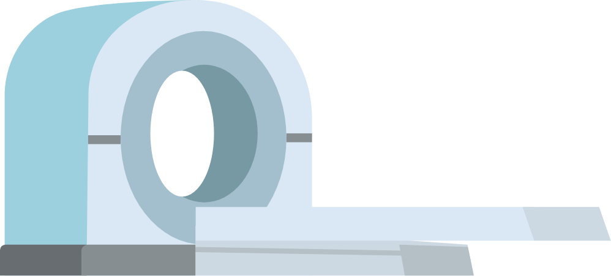

EQUIPAMENTOS PARA FINS DIAGNÓSTICOS
São as tecnologias cujo seu propósito é discernir em meio a dados, hipóteses e possibilidades e,
na maioria das vezes, não são redutíveis a simplificações.(MANSUR, A.J, 2010 *)
Ainda nessa categoria podemos dividi-los em diagnóstico por imagem, onde contempla os equipamentos de alta e
média complexidade e que fazem uso de radiação ionizante e não ionizante, radiação eletromagnética,
ondas acústicas entre outras energias (Ex: ressonância nuclear magnética, equipamento de raios-x, ultrassom, mamógrafo,
tomografia entre outros), além daquelas que não emitem radiação, como as advindas de sistemas de vídeo (Ex: vídeo endoscopia,
cápsula endoscópica etc.) e por último aquelas de diagnóstico laboratorial, onde incluem as tecnologias laboratoriais que
realizam análises químicas e biológicas por meio de kits de diagnóstico in vitro
(Ex.: Autoanalisadores bioquímicos, hematológicos, imunológicos, microbiológicos);

* http://files.bvs.br/upload/S/1413-9979/2010/v15n2/a74-76.pdf